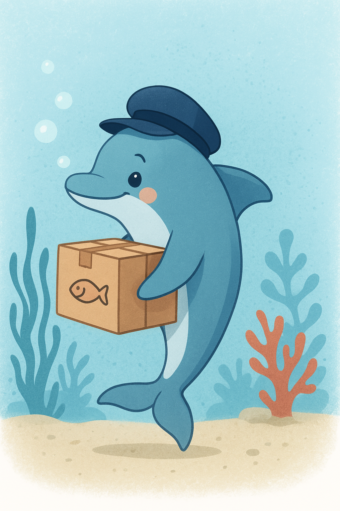
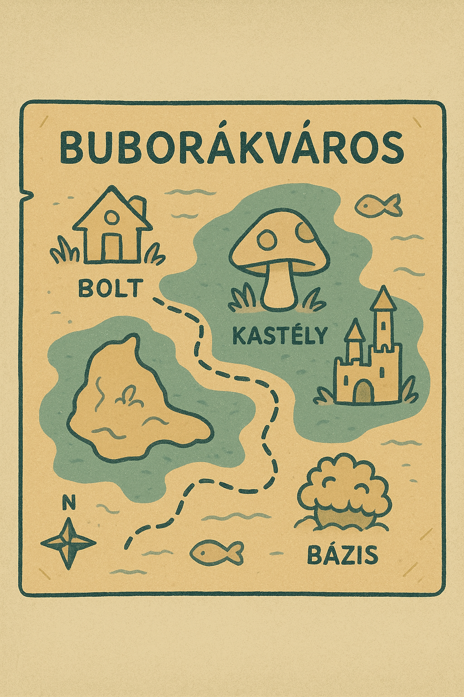

Gyors & Biztonságos Szállítás 🚚
Hogyan működik a Delfin Futár?

Biztonságos Buborékzárás
Minden rendelést speciális, extra erős buborékba csomagolunk, hogy a friss alga és a ropogós korallok is épségben megérkezzenek hozzád.
Delfin Gyorsaság
Csigolyás Tóni és csapata, a delfin futárok, a leggyorsabb áramlatokat használva viszik házhoz a csomagodat. Gyorsak, megbízhatóak és mindig mosolyognak!
Szállítási Zónáink és Díjaink
Szállítási Idő és Díjak
- 1. Zóna (Buborékváros központ):
- Szállítási idő: 30 percen belül
- Díj: 200 Kagyló
- 2. Zóna (Korallzátony széle):
- Szállítási idő: 1 órán belül
- Díj: 350 Kagyló
- 3. Zóna (Távoli vizek):
- Szállítási idő: 2-3 óra
- Díj: 500 Kagyló

Térképünkön láthatod a zónákat. Keress minket buboréklevélben, ha a te területed még nincs rajta!
Akciók és Ingyenes Szállítás
🌊 Ingyenes Házhozúszás! 🌊
Minden 5000 Kagyló feletti rendelés esetén a szállítást mi álljuk a 1. és 2. Zónában! Töltsd tele a hűtődet Oszkár finomságaival!